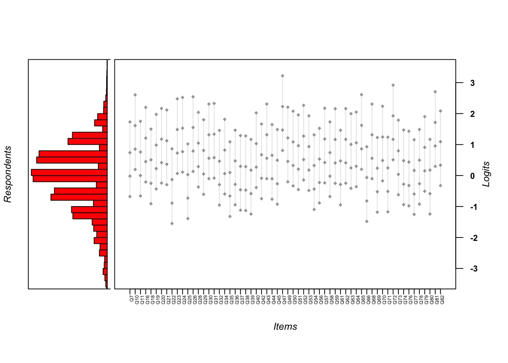

| Characteristic | N | % |
|---|---|---|
| Generation | ||
| Millennial (Ages 25-40) | 1,793 | 55.6 |
| Generation X (Ages 41-56) | 677 | 21.0 |
| Baby Boom (Ages 57-76) | 326 | 10.1 |
| Gen Z (Below Age 25) | 250 | 7.8 |
| Silent Generation (Age 77+) | 166 | 5.2 |
| NA | 10 | 0.3 |
| Total | 3,222 | 100.0 |
| Gender | ||
| Cisgender Female | 1,635 | 50.7 |
| Cisgender Male | 1,320 | 41.0 |
| NA | 162 | 5.0 |
| Other | 49 | 1.5 |
| Prefer not to say | 36 | 1.1 |
| Transgender Female | 12 | 0.4 |
| Transgender Male | 8 | 0.2 |
| Total | 3,222 | 100.0 |
| Race | ||
| White/European American | 2,786 | 86.5 |
| NA | 162 | 5.0 |
| Other | 92 | 2.9 |
| Ethnically of Hispanic/Latin origin | 73 | 2.3 |
| Black/African American | 51 | 1.6 |
| Asian | 47 | 1.5 |
| American Indian / Alaska Native | 7 | 0.2 |
| Native Hawai'ian / Pacific Islander | 4 | 0.1 |
| Total | 3,222 | 100.0 |
| Sexual Orientation | ||
| Straight | 2,626 | 81.5 |
| Bisexual | 174 | 5.4 |
| NA | 158 | 4.9 |
| Gay/Lesbian | 102 | 3.2 |
| Queer | 67 | 2.1 |
| Don't know | 51 | 1.6 |
| Asexual | 44 | 1.4 |
| Total | 3,222 | 100.0 |
Results
Participant Characteristics
In total, 3,222 individuals responded to the survey. Participants who did not opt out and completed at least 50% of the spiritual abuse item pool were considered complete responders and included in the study (N = 3,219). Non-responders included those who responded to less than half of the items (N=3).
Most of the participants responded to the demographics items, and we present the results of these items in Table 1. Most of the sample (76%) was adults between the ages of 25 and 56, with Millennials (Ages 25-40) comprising nearly 56% of the sample, followed by Generation X (Ages 41-56) comprising 21%. Half the sample was cisgender female (51%) and 41% was cisgender male. The sample was also predominantly white (87%) and straight (82%).
The survey also included several items asking participants about their religious background and current identification and beliefs. We report the results of these religious characteristics in Table 2. Most of the sample (87%) was raised in a Christian home. Over half (56%) now self-identify as Protestant, followed by a quarter who do not identify with a religious tradition (16% “Nothing in particular” and 10% “Agnostic”). Over 60% view the Bible as divinely inspired if not to be interpreted literally.
| Characteristic | N | % |
|---|---|---|
| Raised in a Christian home | ||
| Yes | 2,795 | 86.7 |
| No | 266 | 8.3 |
| NA | 161 | 5.0 |
| Total | 3,222 | 100.0 |
| Current Religious Identification | ||
| Protestant | 1,833 | 56.9 |
| Nothing in particular | 518 | 16.1 |
| Agnostic | 325 | 10.1 |
| NA | 165 | 5.1 |
| Atheist | 128 | 4.0 |
| Orthodox Christian | 79 | 2.5 |
| Catholic | 66 | 2.0 |
| Mormon | 57 | 1.8 |
| Other religious tradition | 51 | 1.6 |
| Total | 3,222 | 100.0 |
| Current View of the Bible | ||
| The Bible is the inspired word of God but not everything should be taken literally, word for word | 2,010 | 62.4 |
| The Bible is an ancient book of fables, legends, history and moral precepts recorded by man | 870 | 27.0 |
| The Bible is the actual word of God and is to be taken literally, word for word | 174 | 5.4 |
| NA | 168 | 5.2 |
| Total | 3,222 | 100.0 |
Figure 1 depicts the results of the item asking participants their current theological identification. According this plot, most of the sample are moderate in their theological views. Very few report being “Very Liberal” or “Very Conservative”.

Initial Item Analysis
In Table 3 we report classical statistics for the 66 SHAS items. We sorted the items by their mean. We flagged six items due to extreme values of skew (less than -2 or greater than +2) or kurtosis (less than -7 or greater than +7) and item-total correlations below 0.50. These included items EQ17, EQ27, EQ41, EQ46, EQ55, and EQ60. Category response proportions show that most people responded “Never” to these items. Thus, because these items do not apply to the vast majority of people in this population, we removed them from the item pool. This reduced the pool from 66 to 59 items.
| 1 | 2 | 3 | 4 | 5 | n | mean | sd | skew | kurtosis | Item-total correlation | flag | |
|---|---|---|---|---|---|---|---|---|---|---|---|---|
| EQ46 - Treated as less than because of my skin color | 0.94 | 0.03 | 0.02 | 0.01 | 0.00 | 3,211 | 1.11 | 0.48 | 5.15 | 28.93 | 0.16 | * |
| EQ41 - Denied opportunities to serve because of my sexual orientation | 0.89 | 0.02 | 0.03 | 0.02 | 0.03 | 3,211 | 1.27 | 0.88 | 3.30 | 9.87 | 0.31 | * |
| EQ17 - Treated as less than b/c my sexual orientation | 0.88 | 0.02 | 0.03 | 0.03 | 0.04 | 3,208 | 1.34 | 0.97 | 2.87 | 6.96 | 0.35 | * |
| EQ47 - Medical care being postponed/withheld for religious reasons | 0.70 | 0.17 | 0.09 | 0.02 | 0.01 | 3,218 | 1.48 | 0.86 | 1.93 | 3.40 | 0.52 | |
| EQ60 - Encouraged by leader to stay in abusive marriage | 0.76 | 0.09 | 0.07 | 0.05 | 0.02 | 3,214 | 1.49 | 0.99 | 2.05 | 3.22 | 0.48 | * |
| EQ55 - Hearing cultural references in sermons unfamiliar to my race/eth. subculture | 0.66 | 0.18 | 0.11 | 0.04 | 0.02 | 3,205 | 1.58 | 0.95 | 1.66 | 2.12 | 0.28 | * |
| IQ72 - Feeling as if God harmed me directly | 0.64 | 0.17 | 0.13 | 0.04 | 0.02 | 3,070 | 1.64 | 0.99 | 1.52 | 1.55 | 0.54 | |
| IQ81 - Nightmares about my negative religious experiences | 0.56 | 0.21 | 0.15 | 0.06 | 0.02 | 3,073 | 1.77 | 1.04 | 1.23 | 0.66 | 0.65 | |
| EQ65 - Cut off/shunned by more religious family members | 0.59 | 0.16 | 0.13 | 0.08 | 0.04 | 3,220 | 1.82 | 1.18 | 1.27 | 0.48 | 0.61 | |
| EQ10 - Asked to give up personal goals by pastor | 0.59 | 0.16 | 0.13 | 0.08 | 0.04 | 3,220 | 1.83 | 1.18 | 1.25 | 0.44 | 0.64 | |
| EQ26 - Pressured to forgive abuser while abuse was ongoing | 0.60 | 0.14 | 0.11 | 0.09 | 0.06 | 3,212 | 1.87 | 1.27 | 1.24 | 0.21 | 0.66 | |
| EQ24 - Expected to consult pastor/leader before making non-religious decisions | 0.56 | 0.16 | 0.16 | 0.08 | 0.04 | 3,221 | 1.89 | 1.18 | 1.10 | 0.07 | 0.66 | |
| EQ23 - Prayer replacing needed medical interventions | 0.51 | 0.21 | 0.17 | 0.08 | 0.03 | 3,219 | 1.92 | 1.13 | 1.02 | 0.02 | 0.64 | |
| EQ27 - Denied opportunities to serve b/c of my gender | 0.60 | 0.11 | 0.12 | 0.09 | 0.08 | 3,217 | 1.94 | 1.35 | 1.14 | -0.13 | 0.48 | * |
| EQ31 - Shunned/ignored by pastor/church/group | 0.46 | 0.22 | 0.18 | 0.09 | 0.05 | 3,217 | 2.03 | 1.19 | 0.92 | -0.20 | 0.64 | |
| EQ30 - Deterred from seeking mental health treatment/counseling/medication | 0.50 | 0.17 | 0.17 | 0.11 | 0.05 | 3,219 | 2.04 | 1.25 | 0.88 | -0.46 | 0.70 | |
| EQ43 - Shamed by pastor/group for poor spiritual/moral performance | 0.46 | 0.22 | 0.18 | 0.10 | 0.04 | 3,217 | 2.04 | 1.18 | 0.86 | -0.31 | 0.73 | |
| IQ68 - Anxiety attacks triggered by religious stimuli | 0.49 | 0.17 | 0.19 | 0.11 | 0.05 | 3,073 | 2.06 | 1.23 | 0.83 | -0.51 | 0.68 | |
| EQ52 - Blamed for harm I suffered rather than blaming who harmed me | 0.48 | 0.19 | 0.16 | 0.12 | 0.05 | 3,217 | 2.08 | 1.26 | 0.85 | -0.52 | 0.76 | |
| IQ70 - Feeling betrayed by God | 0.42 | 0.24 | 0.21 | 0.09 | 0.05 | 3,069 | 2.11 | 1.18 | 0.79 | -0.36 | 0.56 | |
| EQ49 - Leadership/group protecting and elevating abusive individuals | 0.44 | 0.22 | 0.18 | 0.11 | 0.05 | 3,213 | 2.12 | 1.23 | 0.79 | -0.50 | 0.72 | |
| EQ16 - Church/community abandoning me in difficult time | 0.45 | 0.21 | 0.17 | 0.11 | 0.06 | 3,217 | 2.13 | 1.27 | 0.83 | -0.50 | 0.69 | |
| EQ57 - Developing mental/physical ailments from conforming to group/leader’s expectation | 0.48 | 0.16 | 0.16 | 0.12 | 0.07 | 3,219 | 2.15 | 1.33 | 0.78 | -0.70 | 0.72 | |
| EQ20 - Members pressured to give money despite financial hardship | 0.50 | 0.15 | 0.15 | 0.11 | 0.09 | 3,217 | 2.16 | 1.39 | 0.82 | -0.71 | 0.68 | |
| EQ62 - Scripture used to justify physical violence | 0.43 | 0.19 | 0.21 | 0.11 | 0.05 | 3,220 | 2.16 | 1.24 | 0.69 | -0.67 | 0.65 | |
| EQ59 - Pastor/group blame victim for their abuse | 0.42 | 0.21 | 0.19 | 0.12 | 0.05 | 3,217 | 2.16 | 1.23 | 0.70 | -0.65 | 0.76 | |
| EQ21 - Taught I would risk Hell if left my church/group | 0.51 | 0.13 | 0.13 | 0.10 | 0.13 | 3,218 | 2.20 | 1.47 | 0.81 | -0.83 | 0.69 | |
| EQ50 - Treated as less than because of my gender | 0.52 | 0.08 | 0.15 | 0.13 | 0.11 | 3,219 | 2.23 | 1.47 | 0.70 | -1.04 | 0.54 | |
| IQ82 - Having trouble navigating life outside my church/community | 0.38 | 0.23 | 0.24 | 0.11 | 0.05 | 3,071 | 2.24 | 1.21 | 0.62 | -0.62 | 0.61 | |
| EQ64 - Witnessing women pressured to stay in unfaithful/abusive marriages | 0.39 | 0.23 | 0.19 | 0.12 | 0.07 | 3,220 | 2.26 | 1.27 | 0.67 | -0.70 | 0.71 | |
| EQ28 - Leadershi/group protecting abusive individuals | 0.37 | 0.24 | 0.19 | 0.13 | 0.06 | 3,216 | 2.26 | 1.25 | 0.63 | -0.73 | 0.72 | |
| EQ40 - Threatening Divine punishment to keep group members in line | 0.44 | 0.17 | 0.18 | 0.12 | 0.10 | 3,220 | 2.28 | 1.39 | 0.67 | -0.88 | 0.75 | |
| EQ63 - Shamed by pastor/group for raising questions or concerns | 0.36 | 0.23 | 0.22 | 0.13 | 0.06 | 3,217 | 2.30 | 1.25 | 0.58 | -0.77 | 0.77 | |
| EQ19 - Behavior excessively monitored by pastor/group | 0.40 | 0.18 | 0.19 | 0.15 | 0.08 | 3,219 | 2.32 | 1.33 | 0.56 | -0.96 | 0.75 | |
| EQ51 - Extreme pressure to be pastor/missionary/spiritual leader | 0.41 | 0.19 | 0.17 | 0.14 | 0.10 | 3,216 | 2.33 | 1.38 | 0.59 | -0.98 | 0.62 | |
| EQ53 - Scripture used to justify abusive parent-child behavior | 0.39 | 0.19 | 0.20 | 0.14 | 0.09 | 3,218 | 2.36 | 1.35 | 0.55 | -0.97 | 0.73 | |
| IQ79 - Distrust of God | 0.33 | 0.23 | 0.24 | 0.12 | 0.08 | 3,068 | 2.40 | 1.27 | 0.50 | -0.81 | 0.61 | |
| EQ34 - Scripture used to justify physical punishment/severe discipline | 0.34 | 0.19 | 0.22 | 0.16 | 0.09 | 3,219 | 2.46 | 1.33 | 0.42 | -1.05 | 0.65 | |
| EQ29 - Feeling special when in pastor’s good graces; otherwise ignored | 0.34 | 0.19 | 0.22 | 0.16 | 0.09 | 3,213 | 2.47 | 1.34 | 0.40 | -1.08 | 0.69 | |
| IQ73 - Self-hatred or self-loathing | 0.31 | 0.21 | 0.24 | 0.15 | 0.09 | 3,072 | 2.50 | 1.31 | 0.38 | -1.00 | 0.64 | |
| EQ11 - Disagree w/pastor portrayed as evil | 0.32 | 0.21 | 0.20 | 0.17 | 0.10 | 3,216 | 2.52 | 1.35 | 0.38 | -1.12 | 0.77 | |
| EQ58 - Terror/horror used to motivate religious decisions | 0.32 | 0.18 | 0.24 | 0.16 | 0.10 | 3,220 | 2.53 | 1.34 | 0.34 | -1.09 | 0.73 | |
| EQ7 - Pastor speaking on God's behalf | 0.35 | 0.18 | 0.19 | 0.16 | 0.13 | 3,215 | 2.54 | 1.43 | 0.39 | -1.21 | 0.67 | |
| EQ42 - Seeing others shamed/shunned by pastor/leader/group | 0.25 | 0.24 | 0.26 | 0.17 | 0.08 | 3,215 | 2.60 | 1.25 | 0.28 | -0.96 | 0.77 | |
| EQ44 - Love/acceptance offered only for high spiritual/moral performance | 0.30 | 0.18 | 0.23 | 0.19 | 0.10 | 3,217 | 2.61 | 1.35 | 0.24 | -1.20 | 0.80 | |
| EQ56 - Being made to feel I was crazy/weird for doubts/questions | 0.27 | 0.17 | 0.23 | 0.21 | 0.12 | 3,217 | 2.72 | 1.37 | 0.14 | -1.24 | 0.82 | |
| EQ18 - Church/pastor discourage critical thinking | 0.27 | 0.17 | 0.24 | 0.19 | 0.13 | 3,220 | 2.75 | 1.37 | 0.14 | -1.21 | 0.77 | |
| EQ45 - Developmentally-inappropriate/anxious Hell/Satan/demons taught to young children | 0.29 | 0.17 | 0.20 | 0.18 | 0.16 | 3,219 | 2.76 | 1.45 | 0.18 | -1.33 | 0.72 | |
| IQ78 - A lack of self-worth | 0.23 | 0.19 | 0.27 | 0.21 | 0.11 | 3,071 | 2.77 | 1.30 | 0.10 | -1.09 | 0.67 | |
| EQ36 - Mental/physical problems interpreted as spiritual/moral weakness | 0.24 | 0.19 | 0.24 | 0.21 | 0.12 | 3,216 | 2.78 | 1.34 | 0.11 | -1.17 | 0.77 | |
| EQ61 - Developmentally-inappropriate/anxious end times descriptions taught to young children | 0.30 | 0.15 | 0.20 | 0.19 | 0.17 | 3,219 | 2.78 | 1.47 | 0.14 | -1.37 | 0.72 | |
| EQ32 - Feeling unable to express unhappiness | 0.24 | 0.16 | 0.27 | 0.21 | 0.11 | 3,219 | 2.79 | 1.32 | 0.05 | -1.14 | 0.73 | |
| IQ74 - Sadness over the loss of my faith/religious community | 0.22 | 0.19 | 0.27 | 0.21 | 0.11 | 3,071 | 2.79 | 1.29 | 0.07 | -1.08 | 0.60 | |
| IQ76 - Feeling I wasted years of my life in a church/set of beliefs | 0.28 | 0.16 | 0.19 | 0.18 | 0.19 | 3,072 | 2.83 | 1.48 | 0.12 | -1.39 | 0.74 | |
| EQ54 - Being explicitly taught to distrust my intuitions | 0.23 | 0.16 | 0.24 | 0.20 | 0.17 | 3,217 | 2.92 | 1.40 | 0.01 | -1.26 | 0.75 | |
| EQ37 - Made to feel less spiritually mature than pastor/leadership | 0.22 | 0.17 | 0.24 | 0.21 | 0.16 | 3,221 | 2.94 | 1.38 | -0.01 | -1.22 | 0.75 | |
| EQ38 - Unrealistic demands placed on my moral/religious behavior | 0.22 | 0.16 | 0.24 | 0.20 | 0.18 | 3,217 | 2.95 | 1.40 | -0.01 | -1.26 | 0.80 | |
| IQ71 - Avoiding religious activities/settings to reduce distressing feelings | 0.19 | 0.17 | 0.24 | 0.22 | 0.17 | 3,074 | 3.01 | 1.36 | -0.06 | -1.19 | 0.74 | |
| IQ69 - Lack of spiritual direction/purpose | 0.13 | 0.20 | 0.32 | 0.23 | 0.12 | 3,071 | 3.01 | 1.20 | -0.06 | -0.83 | 0.57 | |
| EQ39 - Made to feel shame over natural sexual desires (not actions) | 0.24 | 0.13 | 0.20 | 0.21 | 0.22 | 3,219 | 3.05 | 1.48 | -0.12 | -1.37 | 0.72 | |
| IQ80 - Feeling isolated | 0.14 | 0.18 | 0.29 | 0.27 | 0.13 | 3,070 | 3.07 | 1.23 | -0.17 | -0.91 | 0.68 | |
| IQ77 - Anger upon reflecting on negative religious experiences | 0.15 | 0.18 | 0.26 | 0.26 | 0.15 | 3,075 | 3.08 | 1.28 | -0.16 | -1.02 | 0.77 | |
| EQ35 - Taught to distrust my emotions | 0.19 | 0.14 | 0.23 | 0.23 | 0.21 | 3,217 | 3.12 | 1.39 | -0.18 | -1.20 | 0.74 | |
| EQ25 - Feeling unable to raise questions and issues | 0.15 | 0.15 | 0.25 | 0.27 | 0.18 | 3,217 | 3.18 | 1.32 | -0.26 | -1.04 | 0.76 | |
| EQ66 - Others treated as less than due to their sexual orientation | 0.18 | 0.12 | 0.21 | 0.25 | 0.24 | 3,216 | 3.27 | 1.41 | -0.34 | -1.15 | 0.71 | |
| EQ22 - Expected to follow pastor/leader rules re: dating/marriage/sex | 0.20 | 0.11 | 0.15 | 0.24 | 0.30 | 3,218 | 3.33 | 1.49 | -0.39 | -1.28 | 0.70 |
Unidimensionality and Local Independence
Principal Components
We first analyzed the principal components in the 59 SHAS items. As shown in Figure 2, the first component was large, accounting for nearly 30% of the variance. The second, third, and fourth components accounted for 4%, 3%, and 2% of the variance, respectively. The ratio of the eigenvalue of the first (largest) component to that of the second is approximately 13.

Proportion of Variance
Second, we estimated a unidimensional Rasch model on dichotomized responses to the 59 SHAS items and saved the residuals of the person parameters. We calculated the variance in the observed item responses and the variance of the residuals. Reckase (1979) suggests that the unidimensionality assumption is safely met if the Rasch model explains 20% of the variance in the data. In this case, the proportion of variance in the SHAS item data explained by the Rasch model was .23. Thus, the SHAS data meet this criterion.
Principal Component Analysis of Residuals (PCAR)
Next, we examined the principal components of the correlations among residuals of the Rasch analysis. The premise is that once the Rasch model has been estimated, correlations among the item residuals should be minimal. Linacre () suggests that contrasts with eigenvalues of 2.0 or below can be considered noise. In Figure 3, our PCAR analysis found only one contrast that rose above that 2.0 threshold.

Q3
Finally, we calculated the Q3 statistic “Effects of Local Item Dependence on the Fit and Equating Performance of the Three-Parameter Logistic Model” (1984) to examine correlations among item residuals, the premise being that the latent trait should account for so much common variance in the item responses that any net correlations among the items should be weak. The Q3 statistic index criteria are that the raw residual correlation between pairs of items should never exceed 0.10 (Marais & Andrich, 2008). Of the 1,711 item pairs, the mean correlation was -0.017 with a standard deviation of 0.035. Thus, most of the residual correlations among items were very weak. Figure 4 plots the matrix of correlations between item residuals. Each square depicts a correlation. The squares are shaded in grey with the lightest shade indicating the weakest correlations. As hoped, the vast majority of squares are very light, indicating weak correlations among the item residuals.
WLE Reliability= 0.918
Yen's Q3 Statistic based on an estimated theta score
*** 60 Items | 1770 item pairs
*** Q3 Descriptives
M SD Min 10% 25% 50% 75% 90% Max
-0.017 0.036 -0.109 -0.055 -0.040 -0.020 -0.001 0.025 0.321 
Rasch Rating Scale Analysis
We used the Rasch Rating Scale Model (RSM) (Andrich 1978) to examine the SHAS item pool. The RSM is a Rasch model (Rasch 1960) that combines (or “calibrates”) information from items with information from persons to arrive at a common scale for measuring both an item’s and a person’s level of a latent trait, in this case, severity of spiritual abuse. This scale is expressed in logits (log odds units). Whereas the Rasch model was designed for use with dichotomous items (0 = incorrect response, 1 = correct response), the RSM is an extension for use with polytomous items based on rating scales such as Likert scales of agreement (Embretson and Reise 2000).
We also use different language from conventional IRT analyses. Because IRT was developed to measure student achievement, IRT statistics for both items and persons tend to use language of “ability” and “difficulty.” For our purpose to measure a psychological trait such as the experience of spiritual abuse, we chose instead to adopt language of “severity.” We used person parameters and scale scores to represent participants’ severity of abuse and to describe item parameters as severity parameters.
library(tidyverse) library(dplyr) library(tidyr) library(knitr) library(kableExtra) library(stats4) library(lattice) library(mirt) library(WrightMap)
The RSM estimates the probability of a person choosing among several response options (i.e. Never, Once or twice) given two values: the severity of abuse represented by the item, and the person’s severity of the latent trait (spiritual abuse). The increase in severity involved in choosing between two response categories is called a “step parameter”. The RSM makes two assumptions of the response categories. One is that all items use the same rating scale. The other is that the same response categories distinguish persons equally well for each item. For these reasons the RSM estimates the same step parameters for all the items.
To convey this information visually, Figure 5 and Figure 6 are plots of the category response functions of two items. In both, the horizontal axis is the scale of spiritual abuse expressed in logits ranging from -2 to +2. The vertical axis is the probability of selecting a given response (i.e., “Always”) given the person’s overall severity of spiritual abuse. The blue line is the probability of selecting Category 1 (“Never”) for persons with less severe spiritual abuse. Persons with less severe spiritual abuse are most likely to select “Never” while those with more severe abuse are most likely to select “Always.” Between these two extremes are persons with more moderate or average spiritual abuse. These persons are more likely to Categories 3 or 4, “Sometimes” or “Often”, respectively. Both plots show curves that display identical step parameters.
Iteration in WLE/MLE estimation 1 | Maximal change 2.7551
Iteration in WLE/MLE estimation 2 | Maximal change 0.8593
Iteration in WLE/MLE estimation 3 | Maximal change 0.4864
Iteration in WLE/MLE estimation 4 | Maximal change 0.1926
Iteration in WLE/MLE estimation 5 | Maximal change 0.028
Iteration in WLE/MLE estimation 6 | Maximal change 0.0012
Iteration in WLE/MLE estimation 7 | Maximal change 0
----
WLE Reliability= 0.963 Iteration in WLE/MLE estimation 1 | Maximal change 2.7551
Iteration in WLE/MLE estimation 2 | Maximal change 0.8593
Iteration in WLE/MLE estimation 3 | Maximal change 0.4864
Iteration in WLE/MLE estimation 4 | Maximal change 0.1926
Iteration in WLE/MLE estimation 5 | Maximal change 0.028
Iteration in WLE/MLE estimation 6 | Maximal change 0.0012
Iteration in WLE/MLE estimation 7 | Maximal change 0
----
WLE Reliability= 0.963 
These plots point out a step reversal between “Never” and “Once or twice”. Persons reporting the least severe spiritual abuse were most likely to report “Never” to this prompt of medical care being postponed or withheld for religious reasons. Persons farther along the scale who have experienced “average” average spiritual abuse should be more likely to report “Once or twice” but were still more likely to report “Never”. This finding suggests the “Never” and “Once or twice” categories might be collapsed.
Item Severity Parameters and Fit Statistics
Table 4 reports item parameters and fit statistics for the SHAS items. The first column, xsi, reports the severity parameter of the item, and we have sorted the items by this value from least to most severe to facilitate comparison between items. Table 4 also reports fit statistics for the items. These statistics reflect how closely the observed patterns of item responses fit the patterns of item responses predicted by the RSM. These fit statistics are chi-square statistics which examine the cumulative difference the observed pattern of item responses and the pattern of item responses that the model would expect.
Two fit statistics commonly used in IRT models are the infit mean square and the outfit mean square (Bond and Fox 2015). The infit statistic places greater emphasis on unexpected responses that are close to the persons and item location. The outfit is sensitive to unexpected responses that are far from the location. The expected value of infit or outfit for each item is 1.0, with a range of acceptable values ranging from 0.5 to 1.5. Values outside these boundaries indicate a lack of fit between items and the model. All but one of the 60 items had infit and outfit statistics within the acceptable range.
| subscale | xsi | se.xsi | Outfit | Infit | |
|---|---|---|---|---|---|
| *EQ22 - Expected to follow pastor/leader rules re: dating/marriage/sex | controlling leadership | -0.42 | 0.02 | 1.21 | 1.26 |
| EQ66 - Others treated as less than due to their sexual orientation | -0.35 | 0.02 | 1.10 | 1.05 | |
| EQ25 - Feeling unable to raise questions and issues | -0.26 | 0.02 | 0.77 | 0.76 | |
| EQ35 - Taught to distrust my emotions | -0.19 | 0.02 | 1.06 | 0.97 | |
| *IQ77 - Anger upon reflecting on negative religious experiences | internal distress | -0.13 | 0.02 | 0.71 | 0.69 |
| EQ39 - Made to feel shame over natural sexual desires (not actions) | -0.12 | 0.02 | 1.12 | 1.12 | |
| *IQ80 - Feeling isolated | internal distress | -0.11 | 0.02 | 0.93 | 0.86 |
| *IQ69 - Lack of spiritual direction/purpose | internal distress | -0.05 | 0.02 | 1.36 | 1.12 |
| *IQ71 - Avoiding religious activities/settings to reduce distressing feelings | internal distress | -0.04 | 0.02 | 0.93 | 0.92 |
| EQ38 - Unrealistic demands placed on my moral/religious behavior | 0.00 | 0.02 | 0.75 | 0.78 | |
| EQ37 - Made to feel less spiritually mature than pastor/leadership | 0.01 | 0.02 | 0.92 | 0.90 | |
| EQ54 - Being explicitly taught to distrust my intuitions | 0.03 | 0.02 | 0.94 | 0.93 | |
| IQ76 - Feeling I wasted years of my life in a church/set of beliefs | 0.15 | 0.02 | 1.06 | 1.09 | |
| EQ32 - Feeling unable to express unhappiness | 0.17 | 0.02 | 0.91 | 0.88 | |
| EQ61 - Developmentally-inappropriate/anxious end times descriptions taught to young children | 0.18 | 0.02 | 1.10 | 1.14 | |
| EQ36 - Mental/physical problems interpreted as spiritual/moral weakness | 0.18 | 0.02 | 0.82 | 0.82 | |
| *IQ74 - Sadness over the loss of my faith/religious community | internal distress | 0.19 | 0.02 | 1.33 | 1.18 |
| *EQ45 - Developmentally-inappropriate/anxious Hell/Satan/demons taught to young children | spiritual violence | 0.20 | 0.02 | 1.09 | 1.11 |
| *IQ78 - A lack of self-worth | internal distress | 0.20 | 0.02 | 1.09 | 1.02 |
| EQ18 - Church/pastor discourage critical thinking | 0.22 | 0.02 | 0.82 | 0.84 | |
| EQ56 - Being made to feel I was crazy/weird for doubts/questions | 0.24 | 0.02 | 0.68 | 0.71 | |
| EQ44 - Love/acceptance offered only for high spiritual/moral performance | 0.36 | 0.02 | 0.76 | 0.75 | |
| EQ42 - Seeing others shamed/shunned by pastor/leader/group | 0.38 | 0.02 | 0.75 | 0.73 | |
| *EQ7 - Pastor speaking on God's behalf | controlling leadership | 0.45 | 0.02 | 1.36 | 1.26 |
| *EQ58 - Terror/horror used to motivate religious decisions | spiritual violence | 0.45 | 0.02 | 0.92 | 0.95 |
| EQ11 - Disagree w/pastor portrayed as evil | 0.47 | 0.02 | 0.84 | 0.86 | |
| *IQ73 - Self-hatred or self-loathing | internal distress | 0.51 | 0.02 | 1.18 | 1.16 |
| EQ29 - Feeling special when in pastor’s good graces; otherwise ignored | 0.52 | 0.02 | 1.12 | 1.08 | |
| *EQ34 - Scripture used to justify physical punishment/severe discipline | spiritual violence | 0.53 | 0.02 | 1.21 | 1.17 |
| *IQ79 - Distrust of God | harmful God-image | 0.62 | 0.02 | 1.34 | 1.20 |
| EQ53 - Scripture used to justify abusive parent-child behavior | 0.64 | 0.02 | 0.95 | 1.01 | |
| *EQ51 - Extreme pressure to be pastor/missionary/spiritual leader | controlling leadership | 0.67 | 0.02 | 1.40 | 1.38 |
| *EQ19 - Behavior excessively monitored by pastor/group | controlling leadership | 0.69 | 0.02 | 0.86 | 0.93 |
| EQ63 - Shamed by pastor/group for raising questions or concerns | 0.72 | 0.02 | 0.76 | 0.78 | |
| EQ40 - Threatening Divine punishment to keep group members in line | 0.74 | 0.02 | 0.93 | 1.02 | |
| *EQ28 - Leadershi/group protecting abusive individuals | maintain system | 0.76 | 0.02 | 0.92 | 0.90 |
| EQ64 - Witnessing women pressured to stay in unfaithful/abusive marriages | 0.77 | 0.02 | 1.00 | 0.99 | |
| EQ50 - Treated as less than because of my gender | gender discrimination | 0.79 | 0.02 | 1.96 | 1.92 |
| *IQ82 - Having trouble navigating life outside my church/community | internal distress | 0.80 | 0.02 | 1.16 | 1.15 |
| EQ21 - Taught I would risk Hell if left my church/group | 0.83 | 0.02 | 1.32 | 1.39 | |
| EQ59 - Pastor/group blame victim for their abuse | 0.87 | 0.02 | 0.76 | 0.81 | |
| *EQ62 - Scripture used to justify physical violence | spiritual violence | 0.88 | 0.02 | 1.07 | 1.11 |
| EQ20 - Members pressured to give money despite financial hardship | 0.88 | 0.02 | 1.14 | 1.27 | |
| EQ57 - Developing mental/physical ailments from conforming to group/leader’s expectation | 0.89 | 0.02 | 0.94 | 1.08 | |
| *EQ16 - Church/community abandoning me in difficult time | maintain system | 0.92 | 0.02 | 1.02 | 1.05 |
| EQ49 - Leadership/group protecting and elevating abusive individuals | 0.92 | 0.02 | 0.89 | 0.93 | |
| *IQ70 - Feeling betrayed by God | harmful God-image | 0.95 | 0.02 | 1.38 | 1.26 |
| *EQ52 - Blamed for harm I suffered rather than blaming who harmed me | maintain system | 0.98 | 0.02 | 0.80 | 0.89 |
| IQ68 - Anxiety attacks triggered by religious stimuli | 1.03 | 0.02 | 0.99 | 1.07 | |
| EQ30 - Deterred from seeking mental health treatment/counseling/medication | 1.03 | 0.02 | 0.95 | 1.03 | |
| EQ43 - Shamed by pastor/group for poor spiritual/moral performance | 1.03 | 0.02 | 0.82 | 0.84 | |
| *EQ31 - Shunned/ignored by pastor/church/group | maintain system | 1.04 | 0.02 | 1.13 | 1.09 |
| EQ23 - Prayer replacing needed medical interventions | 1.19 | 0.02 | 1.07 | 1.08 | |
| *EQ24 - Expected to consult pastor/leader before making non-religious decisions | controlling leadership | 1.24 | 0.02 | 1.02 | 1.08 |
| *EQ26 - Pressured to forgive abuser while abuse was ongoing | maintain system | 1.26 | 0.02 | 1.34 | 1.30 |
| EQ10 - Asked to give up personal goals by pastor | 1.32 | 0.02 | 1.11 | 1.19 | |
| EQ65 - Cut off/shunned by more religious family members | 1.33 | 0.02 | 1.28 | 1.26 | |
| IQ81 - Nightmares about my negative religious experiences | 1.42 | 0.02 | 0.89 | 0.96 | |
| *IQ72 - Feeling as if God harmed me directly | harmful God-image | 1.64 | 0.02 | 1.14 | 1.22 |
| EQ47 - Medical care being postponed/withheld for religious reasons | 1.94 | 0.03 | 1.12 | 1.16 |

Reliability
The RSM expresses internal consistency reliability as Rasch person separation. Based on Table X, the SHAS has a high Rasch person separation reliability value of .963, indicating that the estimated RSM scale discriminated well between persons with varying severity of spiritual abuse.
The SHAS also has a high Rasch item separation reliability with Rel = .XX, χ2 (XX) = XXXX.X, p < .XX, implying that the items have a good spread in terms of item ordering and hierarchy.
Item-Person Map
Figure 8 displays an item-person map (also called a “Wright map”) that shows the item severities of the SHAS items and the person severities for each person who completed the survey. All these severities are estimated in logits (log odds units) as the unit of measures. This means the higher the logit value for an item is, the less likely it was for a person to endorse that particular item. On the other hand, higher logit values for each person indicate more severe spiritual abuse. On the variable map, the mean item severity is constrained to be 0.00 with person severities being relative to that mean item severity While column 1 shows the latent continuum in terms of logit values as the unit of measurement underlying the SHAS, columns 2 and 3 represent the severities of the people and the items.
Figure 8 shows good overlap between the person trait and item severity as evidenced by the match between the mean of the person severity (M = − 0.58) and the mean of the item severity (M = 0.00). This suggests that the majority of the items were appropriate for the sample. While person severity measures range from X.XX logits to − X.XX logits (M = − 0.XX, SD = 0.XX, N = XXXX), the item severities range from X.XX logits to − X.XX logits (M = X.XX, SD = 0.XX, N = XXXX). The item representing the most severe spiritual abuse for participants is Item X, “I feel … XXX” with the severity at X.XX logits (also reported in Appendix Table 2). By contrast the item representing the least severe spiritual abuse is item XX, “I would …”, with − 1.08 logits.

Model-Data Fit
To assess the overall fit of the RSM to the SHAS item response data, we use two statistics. The first is the Root Mean Square Error of Approximation (RMSEA). The suggested cutoff for RMSEA is .06. The second is the CFI. The suggested cutoff for the CFI is .95. These fit statistics are presented in Table RSM Model Fit.
'log Lik.' -225573.6 (df=64)The obtained RMSEA value of .09 (95% CI[.092, .093]) exceeds the cutoff of .06. The CFI of .953 meets the recommended .95 threshold. Together these statistics evidence that the RSM fits the SHAS items.
DIF Analysis
Differential item functioning (DIF) examines how an item functions differently for people of equal standing on the trait. In this case, we conducted DIF analysis of the SHAS items to examine item bias by gender, and age, and race. [We applied logistic ordinal regression with IRT scoring. [We used the Chi-squared likelihood-ratio statistic as the initial DIF detection criteria (alpha < 0.01) and a cut-off of McFadden pseudo R2Δ ≥ 0.02 in model comparisons to determine substantial DIF, a reasonable threshold used in the development of self-reported health outcomes.]
In this analysis, we examined the degree to which there was evidence of uniform differential item functioning (DIF) between two subgroups of participants (group 1 and group 2). As a first step we examined item severity estimates and standard errors specific to each subgroup using the Rating Scale Model Andrich (1978). We estimated item severity for the two subgroups using a combined analysis of both subgroups and then estimating the group-specific item severities and standard errors are shown in Table X.
To examine the differences in item severity between subgroups, we calculated standardized differences following Wright and Masters (1982) as follows:
[equation]
where
z is the standardized difference, d1 is the item severity specific to Subgroup 1, d2 is the item severity specific to Subgroup 2,
s e 2 1 is the standard error of the item severity specific to Subgroup 1, and
s e 2 2 is the standard error of the item severity specific to Subgroup 2. Using the formulation of the z statistic, higher values of z indicate higher item locations (more-severe to endorse) for Subgroup 1 compared to Subgroup 2.
Figure X shows a plot of the z-statistics for the four items; these values are also presented numerically in Table X. In the figure, the x-axis shows the item identification numbers, and the y-axis shows the value of the z-statistic. Boundaries at +2 and -2 are indicated using dashed horizontal lines to highlight statistically significant differences in item severity between subgroups. Examination of these results indicates that the items were not significantly different in severity between the two subgroups. In addition, there were both positive and negative z statistics, indicating that although the differences in item severity were not significant, there were some items that were easier to endorse for Subgroup 1 and others that were easier to endorse for Subgroup 2.
Figure 1: Plot of Standardized Differences for Items between Subgroups
To further explore the differences in item severity between the two subgroups, Figure 2 shows a scatterplot of the item locations between the two subgroups. In the plot, the item severity for Subgroup 1 is shown on the x-axis, and the item severity for Subgroup 2 is shown on the y-axis. Individual items are indicated using open circle plotting symbols. A solid identity line is included to highlight deviations from invariant item severities between the two groups: Points that fall below this line indicate that items were easier to endorse (lower item measures) for Subgroup 2, and points that fall above the line indicate that items were easier to endorse (lower item measures) for Subgroup 1. Dashed lines are also included to indicate a 95% confidence interval for the difference between the item measures, following Luppescu (1995).
Figure 2: Scatterplot of Subgroup-Specific Item Severities
Finally, Figure 3 is a bar plot that illustrates the direction and magnitude of the differences in item severities between subgroups. In the plot, each bar represents the difference in severity between subgroups for an individual item, ordered by the item sequence in the survey. Bars that point to the left of the plot indicate that the item was easier to endorse for Subgroup 1, and bars that point to the right of the plot indicate that the item was easier to endorse for Subgroup 2. Dashed vertical lines are plotted that show values of +0.5 and -0.5 logits as an indicator of substantial differences in item severity between subgroups.
Figure 3: Bar Plot of Differences In Item Severity Between Subgroups
Andrich, David. 1978. “A Rating Formulation for Ordered Response Categories.” Psychometrika 43: 561–73.
Bond, Trevor G., and Christine M. Fox. 2015. Applying the Rasch Model: Fundamental Measurement in the Human Sciences. New York, New York: Routledge.
“Effects of Local Item Dependence on the Fit and Equating Performance of the Three-Parameter Logistic Model.” 1984. Applied Psychological Measurement 8 (2): 125–45.
Embretson, Susan E., and Steven P. Reise. 2000. Item Response Theory for Psychologists. Mahwah, New Jerey: Lawrence Erlbaum Associates.
Rasch, Georg. 1960. Probabilistic Models for Some Intelligence and Attainment Tests. Chicago, IL: University of Chicago Press.
Reckase, Mark D. 1979. “Unifactor Latent Trait Models Applied to Multifactor Tests: Results and Implications.” Journal of Educational Statistics 4: 207–30.